I JavaScript bruker vi variabler for å lagre og manipulere data. Det finnes tre måter å deklarere variabler på:
var, let og const.
Forskjellen mellom dem handler hovedsakelig om scope
(område hvor variabelen er gyldig), mutabilitet (om verdien kan endres) og hoisting (hvordan JavaScript håndterer variabler før koden kjøres).
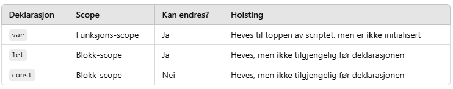
Var - funksjons-scope og hoisting
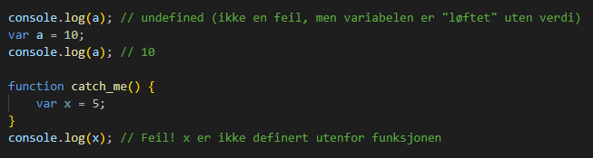
Var kan brukes før den er deklarert pga. hoisting, men verdien blir undefined inntil den er tilordnet.
Let - Blokk-scope og ingen re-deklarering
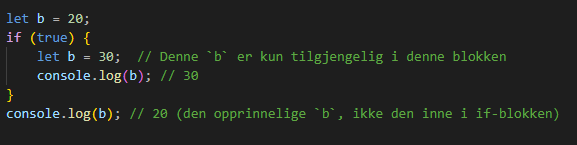
let er blokkområdet, så den eksisterer bare i { } der den er definert.
Const - Konstant verdi og blokk-scope
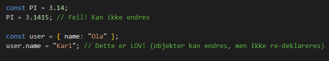
const kan ikke endres, men objekter/arrayer kan endres innholdsmessig.
Løkker i JavaScript
Javascript har forskjellige typer løkker. Noen av disse ligner på det dere har sett i Python.
I dette prosjektet skal vi gå gjennom for og while løkker.
for-løkker
En for-løkke brukes når du vet hvor amnge ganger en handling skal gjentas. Den består av tre deler:
initilisering: det vil si en variabel (let i = 0) som definerer en teller, En betingelse
(i < 5) som løkken kjører så lenge den er sann, og en oppdatering på telleren (i++).
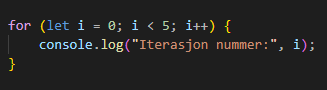
det finnes også andre for-løkke typer
For-in-løkke
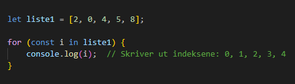
I javascript bruker du for...in for å iterere over indekser (nøklene) i et objekt eller
en liste. I dette tilfellet er liste1 definert som en array.
ForEach-løkke
ForEach() brukes til å iterere over en array og utføre en funskjon på hvert element.
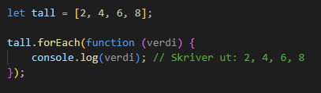
Her kan du se magien med
JavaScript. Du kan kombinere en for-løkke med en funksjon i én og samme kodelinje. Denne
kan ikke bare iterere gjennom elementer i en liste, men også utføre
flere oppgaver samtidig – for eksempel endre, slette eller legge til elementer i listen.
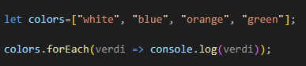
Du kan også iterere elementer i et ordbok
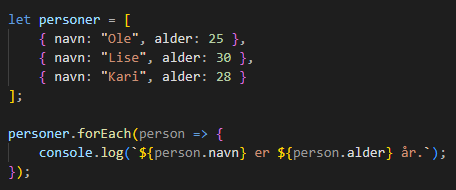
koden ovenfor skriver:
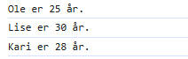
While-løkker
En while-løkke brukes når du ikke nødvendigvis
vet antall gjentakelser på forhånd. Den kjører så lenge betingelsen er sann.
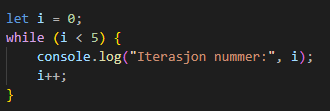
Strukturen til while-løkken ovenfor kan minne deg det du har sett i Python
En funksjon i JavaScript er en gjenbrukbar kodeblokk som utfører en
spesifikk oppgave. Funksjoner gjør koden mer organisert, modulær og lettere å
vedlikeholde.
Funksjonserklæring (Function Declaration)
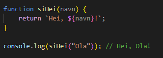
Brukes ofte når funksjonen skal gjenbrukes mange ganger og
kan kalles før deklarasjonen pga. hoisting.
Funksjonsuttrykk (Function Expression)
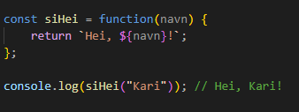
Tildeles en variabel og kan ikke kalles før den er definert og
brukes ofte for anonym funksjoner eller callback-funksjoner.
Pilfunksjon (Arrow Function, ES6)
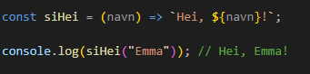
Kortere syntaks og mer lesbar kode. Automatisk retur hvis det bare er én linje med kode.
Funksjoner med Standardverdier
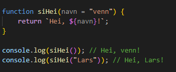
Hvis ingen verdi sendes, brukes standardverdien
Funksjoner med Flere Parametere
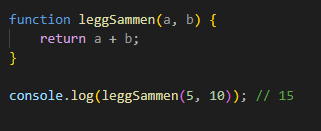
Callback-funksjoner
En callback i JavaScript er en funksjon som sendes som et argument til en annen funksjon og kjøres
senere, ofte etter at en asynkron operasjon er fullført.
Dette brukes mye i webutvikling for å håndtere hendelser, AJAX-forespørsler, animasjoner og mer.
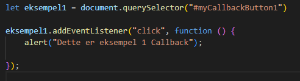
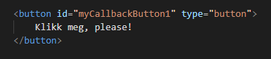
Eksempel 2
Eksempel 3
Syntaks
HTML5 og CSS3 gir oss nye og svært fleksible måter å spesifisere stiler på, samt verktøy for å manipulere stiler med JavaScript.
Nøkkelen til dette er selektorer, som dere tidligere har sett som CSS-velgere. Dette er en viktig del av prosjektet og må være klar før vi går videre med koding i javaScript. Om du ikke husker hva CSS-velgere er, klikk på videoen eller ta en titt
på NDLAs nettside om CSS-velgere.
JavaScript gir oss muligheten til å manipulere CSS-stiler dynamisk,
slik at vi kan endre utseendet på en nettside basert på brukerinteraksjoner.
Dette gjøres ved å velge HTML-elementer og endre deres style-egenskaper
eller klasser.
Disse metoden hjelper deg til å velge HTML-elementer med javaScript
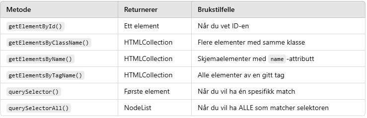
Kolonnen "Returnerer" i tabellen beskriver hvilken type data hver metode gir tilbake når den brukes.
document.getElementById()
Denne metoden fungerer best når du vet at HTML-elementet har en unik ID.
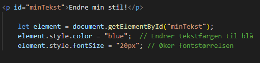
Slik bruker du getElementById og funksjoner for CSS-manipulering
Hvis du klikker på teksten "Endre min stil" vil fargen endre seg hver gang du klikker på det. Dette er fordi hver gang du klikker vil HTML elementet
kjøre en funksjon som endrer stilen
Endre min stil!
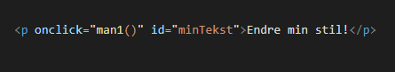
HTML-elementet
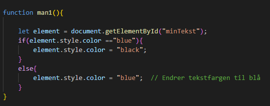
Javascript-kode
document.getElementsByClassName()
Velger alle elementer med en bestemt klasse (HTMLCollection) og brukes når du vil endre flere elementer samtidig.